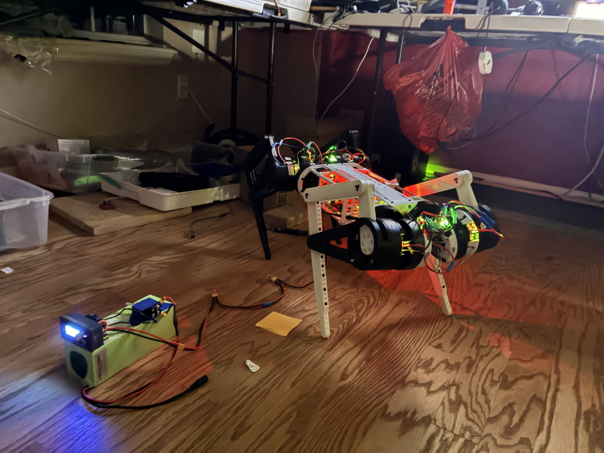

TacocaT Project

Introduction
TacocaT, a quadrupedal robot based on the MIT Mini Cheetah, is the sum of almost 4 years of development. I started the project during the summer of 2022 as a Lego model, and since then, it has evolved into a fully 3D printed frame supported by 4 aluminum rods.
The Start
I got the idea for a robot dog